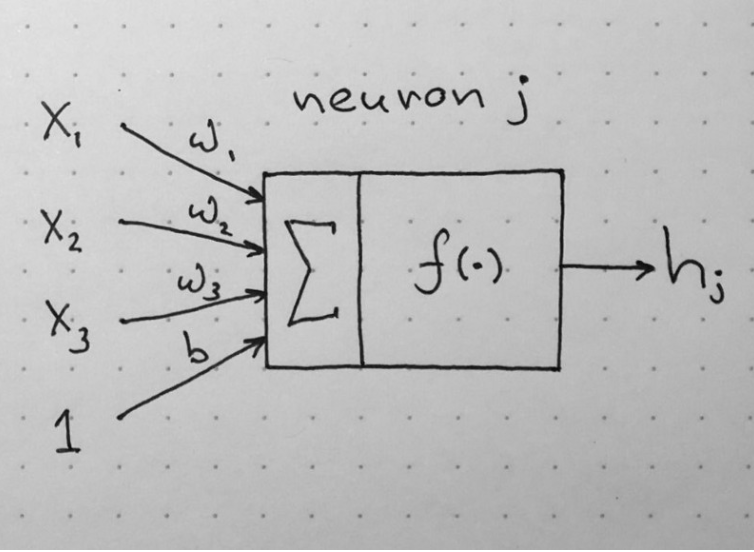
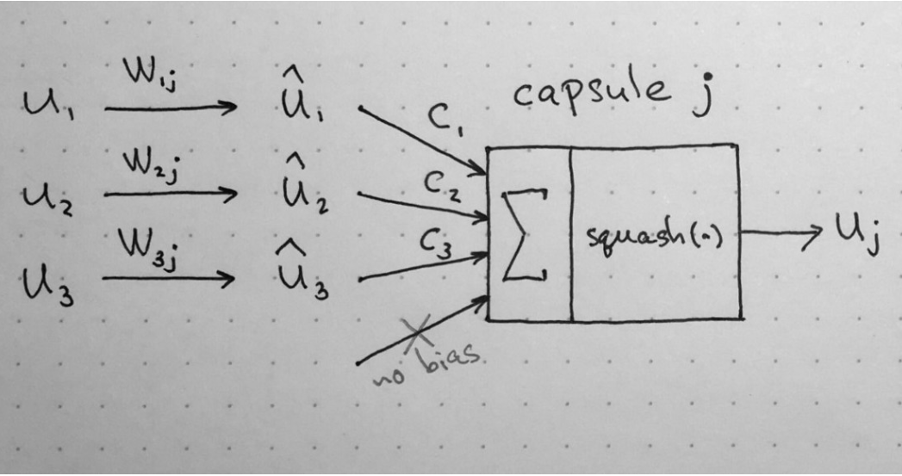
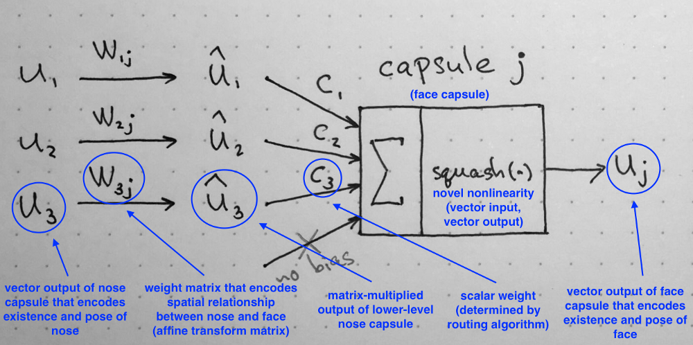
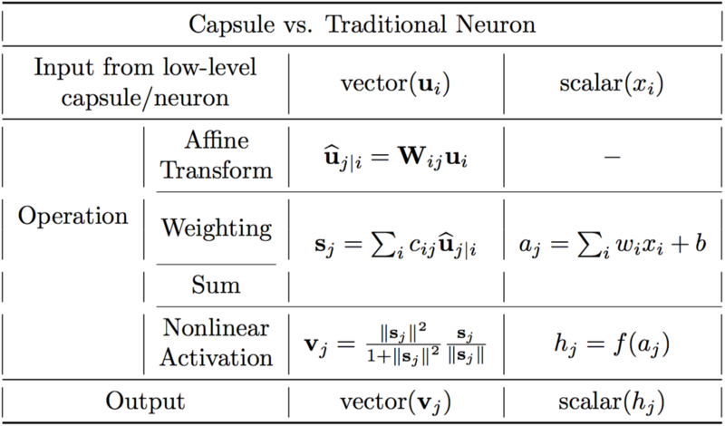

Capsule Networks
An Advanced Approach to Object Recognition
Presented by Jivan Y Patil
Introduction & Motivation
Introduction
- Image processing by Brain.
- Computer Vision Applications.
- Importance of Neural Networks in CV.
- Convolutional Neural Networks and Advantages.
- Problems related to training NN model.
Motivation
- Object rendering
- CNN processes images in 2D
- Representation of objects in the brain does not depend on view angle
- Hardcoding 3D World into a Neural Net
Literature Survey
Literature Survey
- LeNet
- It's first CNN based classification approach for classification of handwritten digits
- AlexNet
- It's ths first CNN model to complete ImageNet challenge of classifying 1000 classes with error rate of 6.9%
- VGGNet
- It's improvisement over alexnet with error rate of 3.1%
- Max-Pooling Dropout for Regularization of CNN
- Explains how max-pooling works
- Explains how Regularization can be achieved by using Dropout layers
Literature Survey
- Matrix capsules with EM routing
- Explains how max-pooling works
- Explains how max-pooling works
- Explains how Regularization can be achieved by using Dropout layers
- Dynamic Routing Between Capsules
- Explains how max-pooling works
- Explains how max-pooling works
- Explains how Regularization can be achieved by using Dropout layers
Convolutional Neural Networks
Classification, Localization, Detection, Segmentation
What is CNN?
- A class of deep, feed-forward artificial neural networks.
- Convolutional networks were inspired by biological processes.
- It resembles the organization of the animal visual cortex.
- Require little pre-processing
- Learns the filters which are hand-engineered in traditional algorithms
Structure of CNN

Structure of CNN
- Convolution Layer
- Activation
- Pooling Layer
- Dropout Layer
- Dense Layer
- Softmax Layer
What Convolution Layer Does?
Convolution preserves the spatial relationship between pixels by learning image features using small squares of input data.

What is Activation Function?
It’s just a thing (node) that you add to the output end of any neural network. It is also known as Transfer Function. It can also be attached in between two Neural Networks.

Activation/Feature Maps
It is a mapping that corresponds to the activation of different parts of the image and also maps where a certain kind of feature is found in the image.

Pooling Layer
Spatial Pooling reduces the dimensionality of each feature map but retains the most important information.

Dropout Layer
Dropout layers are an indirect means of regularization and ensemble learning for neural networks

Fully connected Layer
The Fully Connected layer is a traditional Multi Layer Perceptron that uses a softmax activation function in the output layer.

What is Softmax?
The softmax function, or normalized exponential function, is a generalization of the logistic function that "squashes" a K-dimensional vector \(\mathbf {z}\) of arbitrary real values to a K-dimensional vector \(\sigma(\mathbf{z})\) of real values in the range (0, 1) that add up to 1.
the predicted probability for the j'th class given a sample vector x and a weighting vector w is:
\[P(y=j|x) = \frac{\mathbf{e}^{x^T w_j}}{\sum_{k=1}^K \mathbf{e}^{x^T w_k}} \]
How CNN works?

How Features are learned?
- Convolution
- Feed forward
- Back Propagation
How Classification is done?
- Fully Connected Layer
- Classification with Softmax
CNN is Awesome!!!
Problems with CNN
Example

“Internal data representation of a convolutional neural network does not take into account important spatial hierarchies between simple and complex objects.”
Hinton: “The pooling operation used in convolutional neural networks is a big mistake and the fact that it works so well is a disaster ”
Reason?
- What Pooling Does?
- Progressively reduces the spatial size of the representation
- Relevant features get accumulated
- How it affects overall perfformance?
- Reduces training time by dimensionality reduction
- Adds scale invariance
- The NN can better identify objects by retaining spetial information unlike in case of CNN.
- How it Affects Learning?
- Loss of spatial information
- Adds positional invariance
How Capsule Network are different from CNN?
Artificial Neuron
“An artificial neuron is a mathematical function conceived as a model of biological neurons, a neural network”
Capsule
“Capsules encapsulate all important information about the state of the feature they are detecting in vector form.”
Capsule
No pooling layer
Max pooling loses valuable information and also does not encode relative spatial relationships between features.
Different Approach than CNN

Capsule Networks
Overview
- How human brain processes images?
- CNN processes images in 2D unlike the human brain.
- The NN can better identify objects by retaining spetial information unlike in case of CNN.
Structure of Capsule Network

Structure of Capsule Network
Encoder
Encoder part of the network takes as input a 28 by 28 MNIST digit image and learns to encode it into a 16-dimensional vector of instantiation parameters
- Layer 1. Convolutional layer
- Layer 2. PrimaryCaps layer
- Layer 3. DigitCaps layer
Structure of Capsule Network
Decoder
Decoder takes a 16-dimensional vector from the correct DigitCap and learns to decode it into an image of a digit. Decoder is used as a regularizer, it takes the output of the correct DigitCap as input and learns to recreate image.
- Layer 4. Fully connected #1
- Layer 5. Fully connected #2
- Layer 6. Fully connected #3
Image Reconstruction for training

PrimaryCaps layer
-
primary capsules' job is to take basic features detected by the convolutional layer and produce combinations of the features.
-
Primary capsules are similar to convolutional layer in nature and perform similar operations.
DigitCaps layer
- This layer has n digit capsules, one for each class.
-
Each of these input vectors gets their own 8x16 weight matrix that maps 8-dimensional input space to the 16-dimensional capsule output space.
Dynamic Routing between Capsules
Demo
Performance Analysis
performance analysis goes here
Conclusion
conclusion goes here